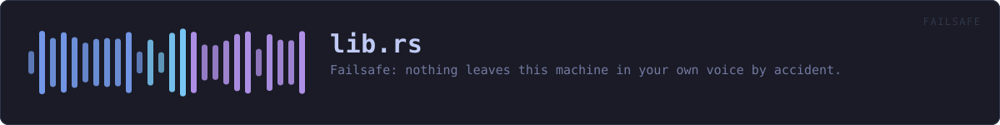

crates/veilvoice-failsafe/src/lib.rs
veilvoice-failsafe · 682 lines · read the source here · or on GitHub
Failsafe: nothing leaves this machine in your own voice by accident.
The accident this exists to stop
You set a calling program to VeilVoice's virtual cable, you start live mode, and everything is veiled. Then you plug in a headset. Windows offers the new microphone, the calling program takes it, and from that moment your real voice is going out, with the veiled window still open in front of you, still showing meters moving, still looking exactly as it did a second ago.
Nobody notices that. It is not a mistake somebody makes through carelessness; it is a mistake the operating system makes on their behalf. Failsafe is on by default because the cost of it being off is that the one thing this whole project exists to prevent happens silently.
What it can do, and what it cannot
It watches which applications hold a microphone, and it knows which device VeilVoice is veiling. If another program picks up a real microphone while you are veiling, that is the accident, and Failsafe:
1. says so, loudly, because a silent guard is not a guard; and 2. closes that program, if Posture::CloseIt is set, which it is by default, because a warning you have not read yet does not stop your voice going out.
It cannot stop the operating system handing a microphone to another program in the first place. Doing that needs exclusive-mode capture of every input device, or a driver, and neither is something this project ships. See CANNOT_PREVENT, which is the wording a front end must show. What Failsafe does is notice within a second or so and act. That is a real difference from nothing, and it is a real difference from prevention, and both halves have to be said.
Killing another program is a serious thing
So it is bounded rather than general:
- VeilVoice never closes itself, which would end the veiling it exists to protect.
- It never closes a system process.
PROTECTEDis a list, checked by name, and anything on it is reported and left alone. - It only closes what is actually holding a microphone, from the watch feed, never a name from a guess.
- Every close is recorded, because a program that vanishes with nothing to explain it is indistinguishable from a crash.
In plain words
Failsafe is on by default and it is the safety catch.
The danger it guards against is this: you are talking through VeilVoice with your voice disguised, you plug in headphones or a headset, and your computer quietly switches the call over to the real microphone. Your actual voice goes out and nothing on screen looks any different.
Failsafe watches for exactly that. If another program picks up a real microphone while you are being veiled, it tells you straight away and closes that program so your voice stops going out.
What it cannot do is stop your computer from handing the microphone over in the first place, because that needs a level of access this program does not have, and it says so rather than letting you believe otherwise. It notices, and it acts, within about a second.
WHAT THIS FILE CONTAINS
682 lines defining 14 functions (12 public), 5 types and 4 constants. Everything below is read out of the source, so it cannot disagree with the code.
The types it owns.
enum Postureline 75 · How hard Failsafe acts when it finds something.enum Findingline 206 · What Failsafe found.struct Actionline 284 · One thing Failsafe did, for the record.struct Holderline 301 · What the watch feed says about one application holding a device.struct Guardline 315 · The state Failsafe needs to decide anything.
What happens when it runs. These are the ways in: public, and nothing else in this file calls them, so they are what an outside caller reaches first.
Posture::labelline 95 · A short name for a picker.Posture::noteline 104 · What this choice costs and buys.Posture::is_online 124 · Whether anything is being watched at all.Posture::keyline 132 · The identifier written to the settings file.Posture::from_keyline 146 · Read a posture back.Finding::is_alarmingline 240 · Whether this needs the reader's attention now.Finding::phrasingline 245 · The sentence to show.Guard::newline 332 · A guard in its default posture, watching nothing yet.Guard::lookline 350 · Decide, given who holds a microphone right now.
reachesis_ours,is_protected,is_veilvoiceGuard::recordline 379 · Record what was done about a finding.Guard::logline 393 · Everything Failsafe has done, oldest first.
WHAT CALLS WHAT
The functions this file defines, and the calls between them. An edge means the callee's name appears, called, inside the caller's body. This is a syntactic reading, not a type-resolved one.
The same graph as Mermaid source
%%{init: {"theme":"base","themeVariables":{"background":"#1a1b26","primaryColor":"#1f2335","primaryTextColor":"#c0caf5","primaryBorderColor":"#7aa2f7","secondaryColor":"#16161e","tertiaryColor":"#16161e","lineColor":"#737aa2","textColor":"#c0caf5","mainBkg":"#1f2335","nodeBorder":"#7aa2f7","clusterBkg":"#16161e","clusterBorder":"#2f3549","fontFamily":"ui-monospace, SFMono-Regular, Consolas, monospace","fontSize":"14px"}}}%%
flowchart TD
n_label(["Posture::label<br/>line 95"])
n_note(["Posture::note<br/>line 104"])
n_is_on(["Posture::is_on<br/>line 124"])
n_key(["Posture::key<br/>line 132"])
n_from_key(["Posture::from_key<br/>line 146"])
n_is_protected["is_protected<br/>line 194"]
n_is_alarming(["Finding::is_alarming<br/>line 240"])
n_phrasing(["Finding::phrasing<br/>line 245"])
n_new(["Guard::new<br/>line 332"])
n_is_ours["Guard::is_ours<br/>line 337"]
n_look(["Guard::look<br/>line 350"])
n_record(["Guard::record<br/>line 379"])
n_log(["Guard::log<br/>line 393"])
n_is_veilvoice["is_veilvoice<br/>line 399"]
n_look --> n_is_ours
n_look --> n_is_protected
n_look --> n_is_veilvoice
click n_label href "https://github.com/tilas01/veilvoice/blob/main/crates/veilvoice-failsafe/src/lib.rs#L95" "open the source"
click n_note href "https://github.com/tilas01/veilvoice/blob/main/crates/veilvoice-failsafe/src/lib.rs#L104" "open the source"
click n_is_on href "https://github.com/tilas01/veilvoice/blob/main/crates/veilvoice-failsafe/src/lib.rs#L124" "open the source"
click n_key href "https://github.com/tilas01/veilvoice/blob/main/crates/veilvoice-failsafe/src/lib.rs#L132" "open the source"
click n_from_key href "https://github.com/tilas01/veilvoice/blob/main/crates/veilvoice-failsafe/src/lib.rs#L146" "open the source"
click n_is_protected href "https://github.com/tilas01/veilvoice/blob/main/crates/veilvoice-failsafe/src/lib.rs#L194" "open the source"
click n_is_alarming href "https://github.com/tilas01/veilvoice/blob/main/crates/veilvoice-failsafe/src/lib.rs#L240" "open the source"
click n_phrasing href "https://github.com/tilas01/veilvoice/blob/main/crates/veilvoice-failsafe/src/lib.rs#L245" "open the source"
click n_new href "https://github.com/tilas01/veilvoice/blob/main/crates/veilvoice-failsafe/src/lib.rs#L332" "open the source"
click n_is_ours href "https://github.com/tilas01/veilvoice/blob/main/crates/veilvoice-failsafe/src/lib.rs#L337" "open the source"
click n_look href "https://github.com/tilas01/veilvoice/blob/main/crates/veilvoice-failsafe/src/lib.rs#L350" "open the source"
click n_record href "https://github.com/tilas01/veilvoice/blob/main/crates/veilvoice-failsafe/src/lib.rs#L379" "open the source"
click n_log href "https://github.com/tilas01/veilvoice/blob/main/crates/veilvoice-failsafe/src/lib.rs#L393" "open the source"
click n_is_veilvoice href "https://github.com/tilas01/veilvoice/blob/main/crates/veilvoice-failsafe/src/lib.rs#L399" "open the source"
classDef entry fill:#1f2335,stroke:#7aa2f7,color:#c0caf5
class n_label,n_note,n_is_on,n_key,n_from_key,n_is_alarming,n_phrasing,n_new,n_look,n_record,n_log entry
classDef api fill:#1f2335,stroke:#7dcfff,color:#c0caf5
class n_is_protected api
classDef helper fill:#1f2335,stroke:#bb9af7,color:#c0caf5
class n_is_ours,n_is_veilvoice helperThis site loads no third-party script, so it cannot run Mermaid; the diagram above is the same nodes and edges drawn by the generator instead. GitHub renders the source below directly.
ITEMS
| Item | Line | Documentation |
|---|---|---|
Posture pub enum | 75 | How hard Failsafe acts when it finds something. |
Posture::label pub fn | 95 | A short name for a picker. |
Posture::note pub fn | 104 | What this choice costs and buys. |
Posture::is_on pub fn | 124 | Whether anything is being watched at all. |
Posture::ALL pub const | 129 | Every posture, in the order a picker should offer them. |
Posture::key pub fn | 132 | The identifier written to the settings file. |
Posture::from_key pub fn | 146 | Read a posture back. |
PROTECTED pub const | 163 | Processes Failsafe will never close, whatever they are holding. |
is_protected pub fn | 194 | Whether this program is one Failsafe refuses to close. |
Finding pub enum | 206 | What Failsafe found. |
Finding::is_alarming pub fn | 240 | Whether this needs the reader's attention now. |
Finding::phrasing pub fn | 245 | The sentence to show. |
Action pub struct | 284 | One thing Failsafe did, for the record. |
Holder pub struct | 301 | What the watch feed says about one application holding a device. |
Guard pub struct | 315 | The state Failsafe needs to decide anything. |
Guard::new pub fn | 332 | A guard in its default posture, watching nothing yet. |
Guard::is_ours fn | 337 | Whether a device name is the one being veiled. |
Guard::look pub fn | 350 | Decide, given who holds a microphone right now. |
Guard::record pub fn | 379 | Record what was done about a finding. |
Guard::log pub fn | 393 | Everything Failsafe has done, oldest first. |
is_veilvoice fn | 399 | Whether this is one of VeilVoice's own programs. |
CANNOT_PREVENT pub const | 410 | What Failsafe cannot do, in the words a front end must show. |
NEVER_CLOSES pub const | 420 | What Failsafe refuses to close, and why. |